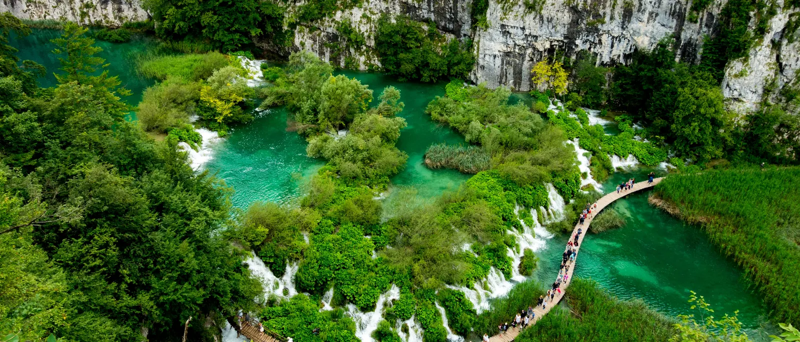

Najpoznatiji nacionalni park u Hrvatskoj
Nacionalni park Plitvička jezera najstariji je i najveći nacionalni park u Hrvatskoj, a od 1979. nalazi se na UNESCO-ovu popisu svjetske baštine. Šesnaest kaskadnih jezera, od tamnoplave do jarko tirkizne boje, preljevaju se jedno u drugo nizom slapova, a povezuju ih drvene staze i šumski putovi kroz bukovu i jelovu šumu. Iz Splita je to cijeli dan, oko dva i pol sata vožnje u svakom smjeru, i upravo zato većina posjetitelja radije bira privatni izlet nego da sve organizira sama: rani polazak znači da ste na gornjim jezerima prije autobusa s grupama, a vozač koji poznaje cestu čini dugu vožnju ugodnom umjesto zamornom. Budući da je park u unutrašnjosti, daleko od mora, ovo je i jedan od rijetkih izleta iz Splita koji pokazuje potpuno drugačiju Hrvatsku: gustu šumu, krš i vodu na sve strane, pravu promjenu u odnosu na dalmatinsku obalu.
Plitvička jezera iz Splita
Privatni transfer u jednom smjeru
Od 475 €Izravni privatni transfer od Zračne luke Split ili Splita do Plitvičkih jezera, s dolaskom do ulaza u park ili do smještaja. Idealno ako odsjedate kraj jezera ili nastavljate prema Zagrebu.
Rezervirajte transferPrivatni cjelodnevni izlet
Od 475 €Izlet iz Splita u oba smjera: vozač vas čeka dok obilazite jezera i vraća vas istog dana. 10 do 12 sati, fiksna cijena za cijeli dan.
Rezerviraj izletŠto je uključeno
- Privatno vozilo samo za vašu grupu, bez zajedničkog prijevoza
- Vozač na raspolaganju cijeli dan
- Preuzimanje i povratak do hotela ili smještaja u Splitu
- Gorivo, cestarina i parking kod parka
- Fleksibilno vrijeme u parku. Vozač vas čeka
- Voda za put
Nije uključeno: ulaznice za Nacionalni park Plitvička jezera, koje se kupuju na ulazu ili unaprijed izravno od parka (cijene ovise o sezoni), te hrana i piće u parku.
Rezerviraj izlet
Pitajte nas na WhatsAppFiksna cijena za cijeli dan · vozač čeka kod parka · fleksibilno vrijeme polaska.
Kako izgleda dan na Plitvicama
-
07:00 – 07:30
Polazak iz Splita
Vozač vas preuzima rano ispred hotela ili apartmana, da do ulaza u park stignete prije autobusa s grupama.
-
~09:30
Dolazak na Plitvička jezera
Vozač vas ostavlja na ulazu u park i dogovara vrijeme povratka. Ulaznice se kupuju na ulazu.
-
09:30 – 14:30
Obilazak jezera
Prošećite drvenim stazama uz Donja i Gornja jezera, prijeđite električnim brodom između dva dijela parka i zastanite za fotografije kad god poželite.
-
~14:30
Pauza za ručak
Kratko stajanje u jednom od restorana kraj ulaza u park ili piknik, kako vam više odgovara.
-
15:00
Povratak u Split
Vozač vas čeka u dogovoreno vrijeme za povratak, uz kratko stajanje usput ako želite.
-
~17:30
Dolazak u Split
U smještaju ste do ranih večernjih sati, a ostatak dana je slobodan.
Ovo je prijedlog rasporeda: vrijeme polaska, stajanje za ručak i vrijeme u parku fleksibilni su i dogovarate ih izravno s vozačem.
Česta pitanja
Koliko traje izlet na Plitvička jezera?
Cijeli izlet iz Splita traje otprilike 10 do 12 sati, od čega oko 4 do 5 sati obilazite sam nacionalni park. Točno trajanje ovisi o mjestu polaska i o tome koliko dugo želite ostati u parku.
Što je uključeno u cijenu?
Uključeni su privatno vozilo, vozač, gorivo i cestarina te preuzimanje i povratak do hotela ili smještaja u Splitu. Ulaznice za Nacionalni park Plitvička jezera kupuju se zasebno u parku. Pri rezervaciji rado ćemo vam reći aktualne cijene.
Je li ovo privatni ili grupni izlet?
Ovo je potpuno privatni izlet: samo vaša grupa i vozač, bez drugih putnika u vozilu. U parku sami određujete tempo.
Koliko se hoda na Plitvičkim jezerima?
Park se obilazi pješice drvenim stazama i putovima, a rute su duge od oko 2 do 8 kilometara, ovisno o tome koju odaberete. Staze su uglavnom ravne uz pokoji blagi uspon, a dulje dionice pokrivaju električni brodovi i panoramski vlakić.
Mogu li rezervirati samo jedan smjer ili je izlet uvijek u oba smjera?
Izleti se rezerviraju kao cijela vožnja u oba smjera. Vozač vas čeka kod parka i vraća u Split istog dana. Ako trebate samo prijevoz u jednom smjeru do Plitvica, pogledajte našu stranicu za obične transfere.